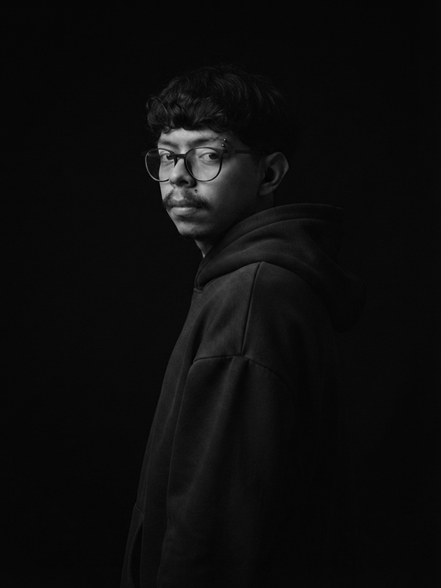

Visualizer oficial desenvolvido para o álbum Palingenesia, de OnyxMC. A ilustração foi separada e tratada em camadas no Photoshop, com cada elemento preparado individualmente para animação. No After Effects, utilizei técnicas de distorção e manipulação para dar movimento e vida à arte original.
Estudo de animação a partir da capa de um álbum. A ideia foi pegar uma arte estática e imaginar como ela poderia ganhar vida. Recriei e recortei o personagem no Photoshop, separando cada elemento para animar no After Effects de forma independente.
Este projeto visava animar uma logo desde a recriação do vetor no Illustrator, separação de camadas para animação no After Effects, até o refinamento da animação com o uso do Gráfico de Movimento, uma ferramenta essencial do After Effects.
A proposta foi transformar uma ilustração estática em uma composição animada. Para isso, trabalhei a arte no Photoshop, separando o personagem e seus elementos em diferentes partes. Depois, desenvolvi os movimentos e efeitos no After Effects, utilizando diferentes ferramentas de rig para dar mais dinamismo e naturalidade à animação.
Projeto desenvolvido para o CRIA Senac SP, desafio de design que conecta estudantes ao mercado criativo. Inspirado no tema "Minha História do Brasil", o projeto foi reconhecido com o 2º lugar na categoria "Projeto Digital", destacando-se como o único trabalho de Motion Design entre os premiados da categoria.

Minha relação com a animação começou aos 12 anos, quando comecei a criar pequenas animações de ação no celular. O hobby me acompanhou por anos até que, em 2019, conheci o Motion Design e comecei a me especializar profissionalmente na área.
Meu trabalho envolve transformar designs, ilustrações e personagens em movimento, além de atuar com edição de vídeo e preparação de assets para animação.
Sou um profissional técnico, com uma base construída na animação e interesse em transformar imagens estáticas em peças com movimento, ritmo e personalidade.
Experiência em Motion Design, animação 2D, edição de vídeo e criação de conteúdos visuais para diferentes formatos e plataformas.
Atuação na produção audiovisual do departamento de Marketing, desde a captação até a pós-produção. Experiência com edição, Motion Design, animação 2D, criação de anúncios, vídeos para redes sociais e peças institucionais, utilizando Premiere Pro, After Effects e Photoshop.